TR₺
Türkiye
İstanbul · Ankara
Boğazın iki yakası, 39 ilçe
Şantiye konteynerinden şirket kulesine. Doğru arsayı seç, binanı aşama aşama yükselt, daireleri sat ya da kiraya ver; ihalelerde zarf ver, kulüp al, şehre mega projelerle iz bırak.
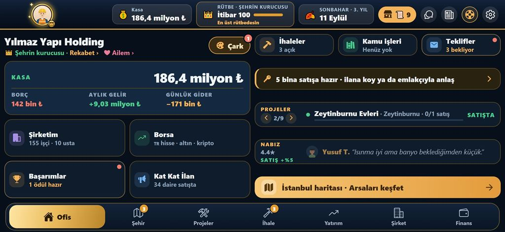
İnşaat, emlak, finans ve rekabet tek oyunda. Her sistem birbirine bağlı: malzemeden kıstığın para yarın itibarına mal olabilir.
İl il, ilçe ilçe gerçek harita. Her arsanın kat sınırı, zemini, manzarası ve fiyatı farklı; Ruhsatla yeni ilçeler açılır.
Hafriyattan iskâna yedi aşama. Ustabaşı, işçi, kalite ve mimari üslup binanın hızını, sağlamlığını ve değerini belirler.
Kamyondan kule vince sekiz makine. Her biri kendi işinde uzman: hafriyat, temel, kaba inşaat, çatı ya da yüksek bina.
Dairelerini ilana koy, alıcılarla pazarlık et, emlakçıyla anlaş. Kiralıkta kirayı piyasanın %80–%120’si arasında sen belirle.
Kapalı zarf: düşük teklif kazanır ama kâr bırakmayabilir. Sonuç tablosunda kim kazandı, kaçıncı sıradaydın gör.
Teleferikten havalimanına yap-işlet-devret projeler: yıllarca gelir, büyük itibar, kalıcı miras.
Gerçek şehirler, kurgusal kulüpler. Aynı anda üç forma sponsorluğu, istediğin kadar kulüp; şampiyonluk ve kupalar.
Ülke ve il meydanında konuş, binanı kart olarak paylaş. Onaylı arkadaşlık, özel mesaj, engelleme ve şikâyet.
Kredi çek, düzenli öde, notunu yükselt. Not iyileştikçe faiz düşer, limit büyür.
Herkes için aynı canlı piyasa. Hisse ve fonlar her gün getiri öder; alım-satım zamanlaması senin elinde.
Sakinlerin yorumları gerçek: kaliteli bina satışları ve itibarı artırır, malzemeden kısmak geri teper.
Ülkende ve ilinde her ay ilk üçe gir, Ruhsat ve kupa kazan. Çırak firmadan Şehrin kurucusuna altı rütbe.
Kaydır →
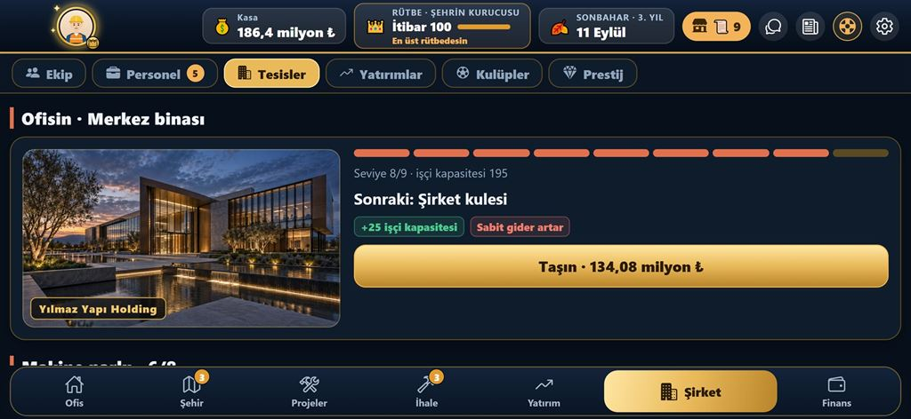
TESİSLEROfisin dokuz kademede büyür; her taşınmada daha çok işçi, daha büyük projeler.
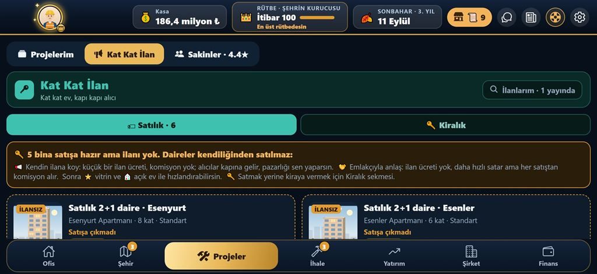
KAT KAT İLANBiten bina kendiliğinden satılmaz. Kat Kat İlan’da ilanını sen verirsin.
Yeni oyunda ülkeni seçersin. Şehirler, ilçeler ve para birimi ülkene göre gelir; sıralama ve Meydan sohbeti de ülkene özeldir.
İstanbul · Ankara
Boğazın iki yakası, 39 ilçe
Berlin · Hamburg
Avro ile alım, satım ve kira
Londra · Manchester
Sterlin ile kendi pazarın
Dubai · Abu Dabi
Dirhem ile gökdelen yarışı
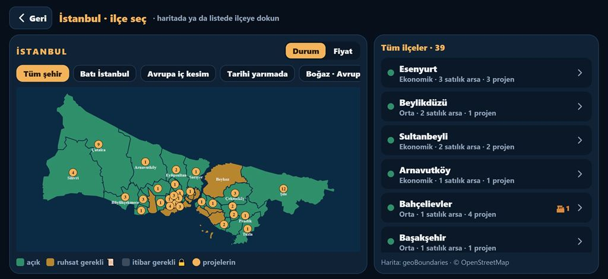
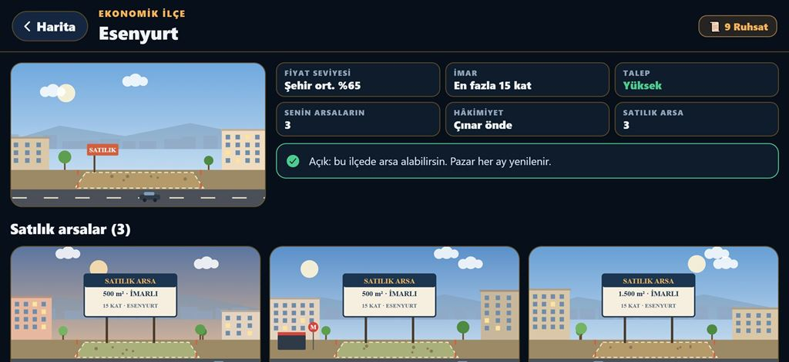
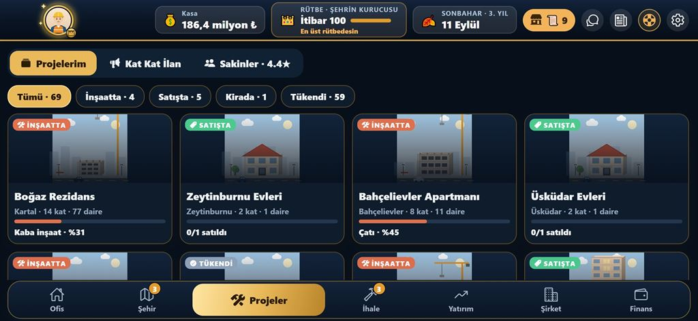
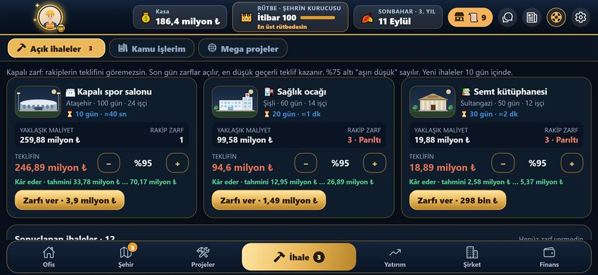
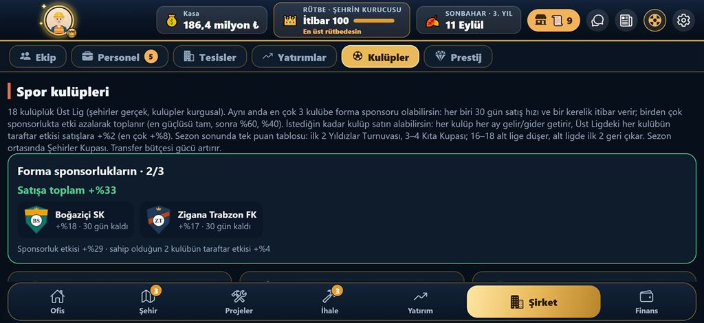
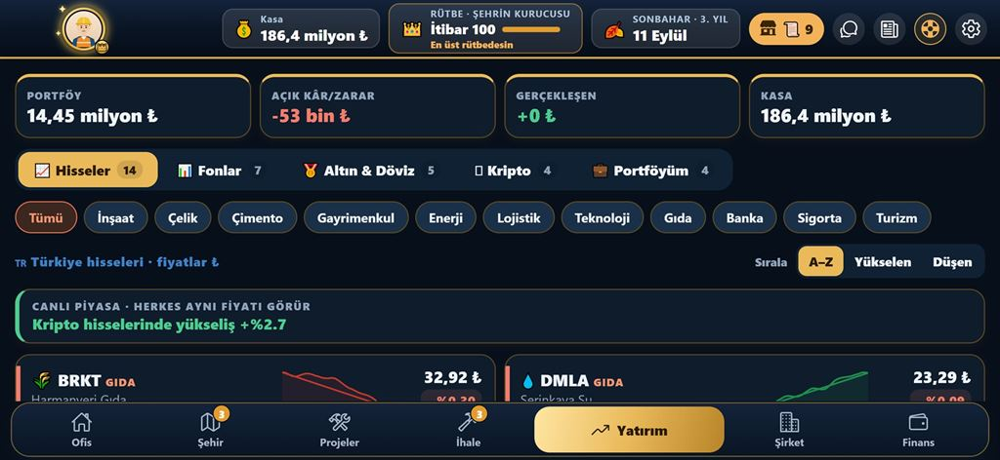
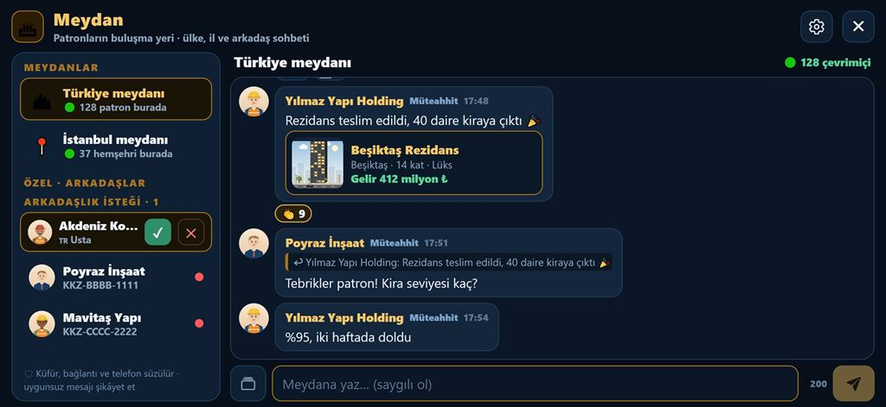
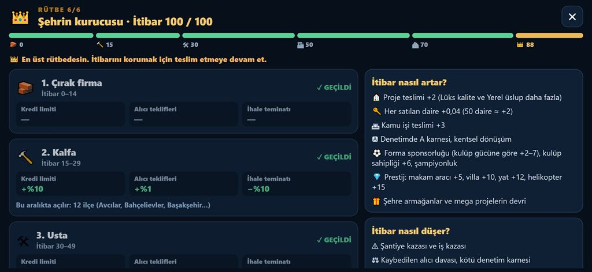
İtibar kazandıkça kredi limitin büyür, alıcılar daha iyi teklif verir, ihale teminatın düşer; her rütbede yeni ilçeler ve projeler açılır.
Ülkeni, karakterini ve şirket adını seç. İsmet Usta seni adım adım yönlendirir.
Haritadan ilçeni seç, uygun bir arsa al, istersen zemin etüdü yaptır.
Bina tipini, kat sayısını, daire planını ve üslubu seç; şantiyeyi canlı izle.
Kat Kat İlan’da sat ya da kirala, kazancınla daha büyük arsalara geç.
Kat Kat Zengin, Türkçe bir inşaat ve müteahhitlik oyunudur. Kendi inşaat şirketini kurar, arsa alır, binanı kat kat yükseltir, daireleri satar ya da kiraya verirsin. Kamu ihaleleri, mega projeler, futbol kulüpleri, borsa ve oyuncu sohbetiyle şirketini büyütürsün.
Evet, oyun ücretsiz indirilir ve baştan sona ücretsiz oynanır. İsteğe bağlı paketler ve Ruhsat oyunu hızlandırır. Yeni bir şehirde şube açmak ise uygulama içi satın alma ile yapılır; ana şehrin ve tüm ilçelerinin yolu oyun içindedir.
Evet. Şirketin telefonunda kayıtlı kalır, internetsiz oynanır. İnternet yalnızca Meydan sohbeti, arkadaş sıralaması ve aylık lig içindir.
iPhone ve Android telefonlarda yatay ekranda oynanır. Mağaza sürümleri yakında yayında.
Rekabet penceresindeki firma kodunu (KKZ-XXXX-XXXX) arkadaşına gönder ya da Meydan’da adına dokun; arkadaşlık isteği gönder. O kabul edince birbirinizi sıralamada görür, özel mesajlaşırsınız.
Meydan’da küfür, bağlantı, telefon ve e-posta otomatik süzülür. Her mesaj şikâyet edilebilir, her oyuncu engellenebilir; şikâyetler 24 saat içinde incelenir. Özel mesajları ve arkadaşlık isteklerini istediğin an kapatabilirsin.
Oyunda Ayarlar › Çevrimiçi verimi sil: firma kartın, arkadaşlıkların ve tüm mesajların sunucudan kalıcı olarak silinir. Ayrıntılar Veri silme sayfasında.
Kat Kat Zengin iPhone ve Android için hazırlanıyor.